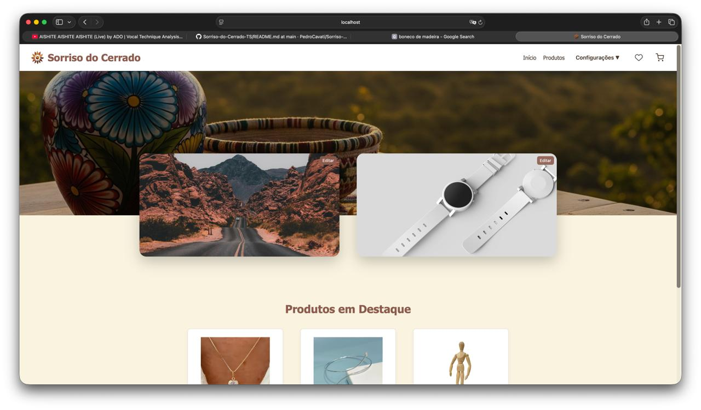
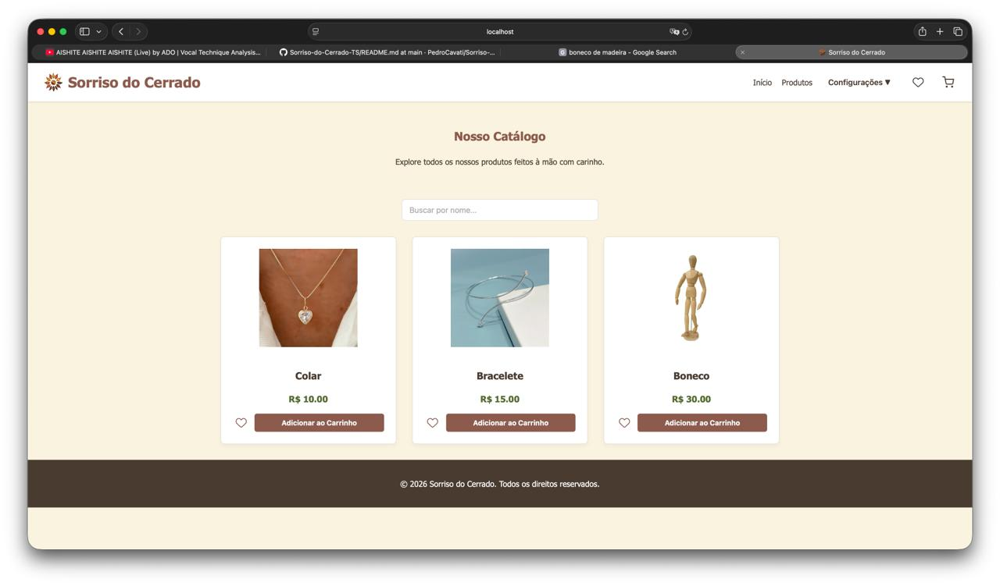
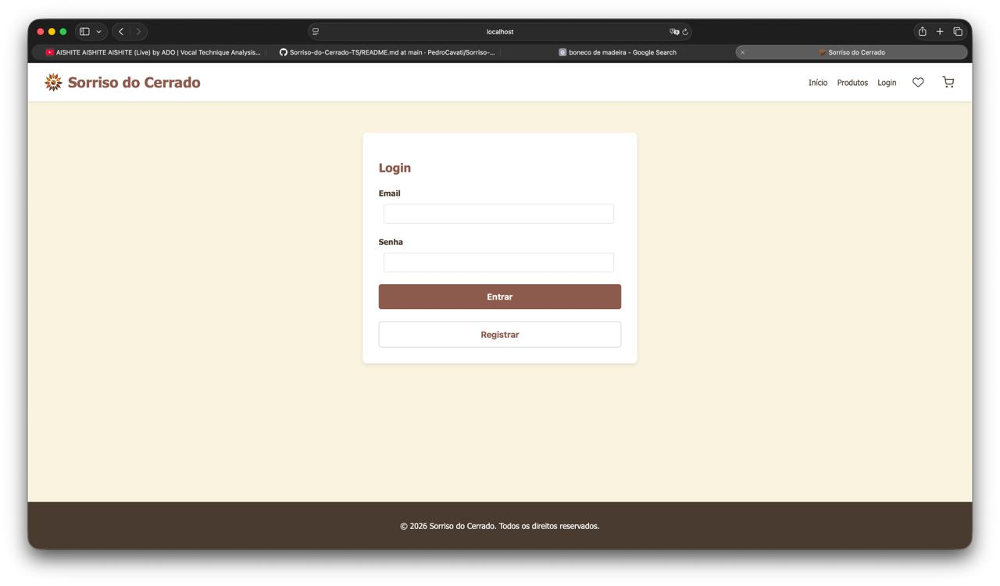
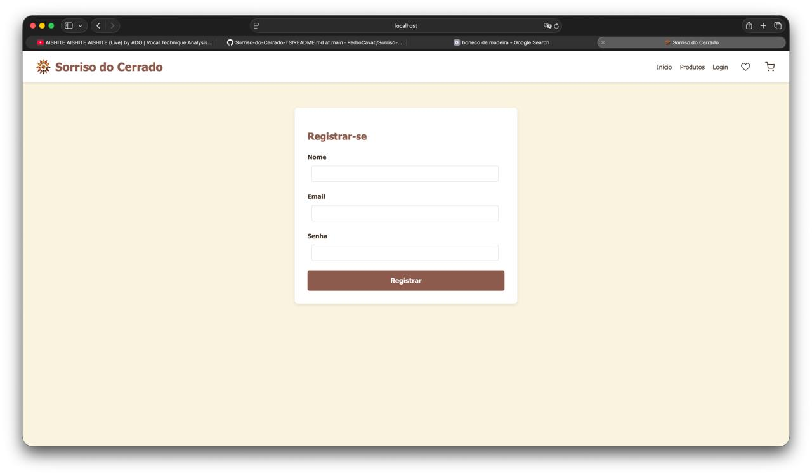
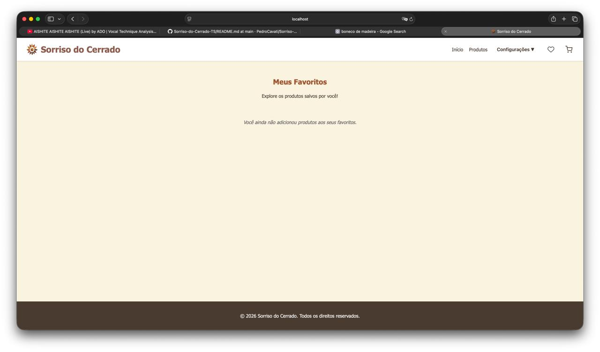
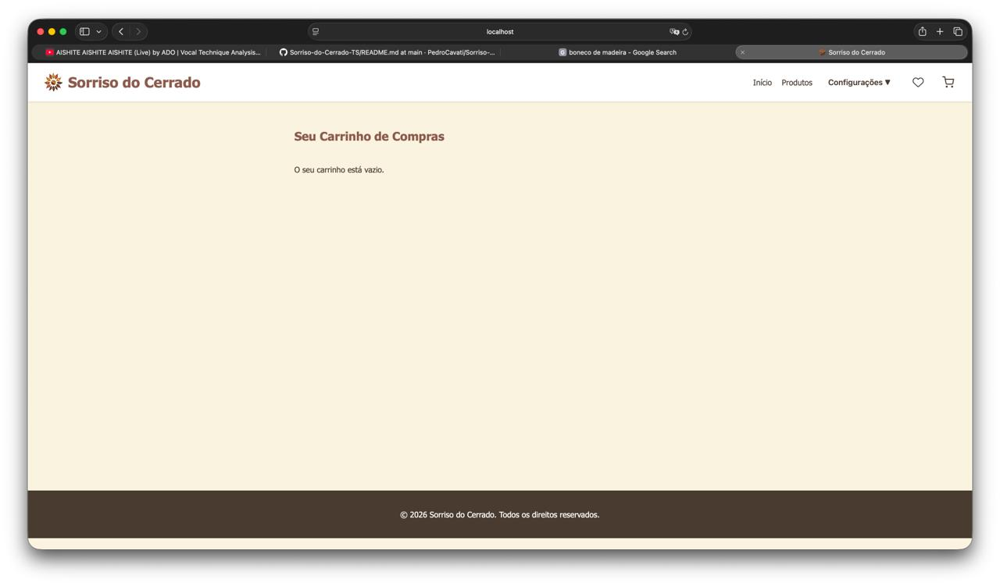
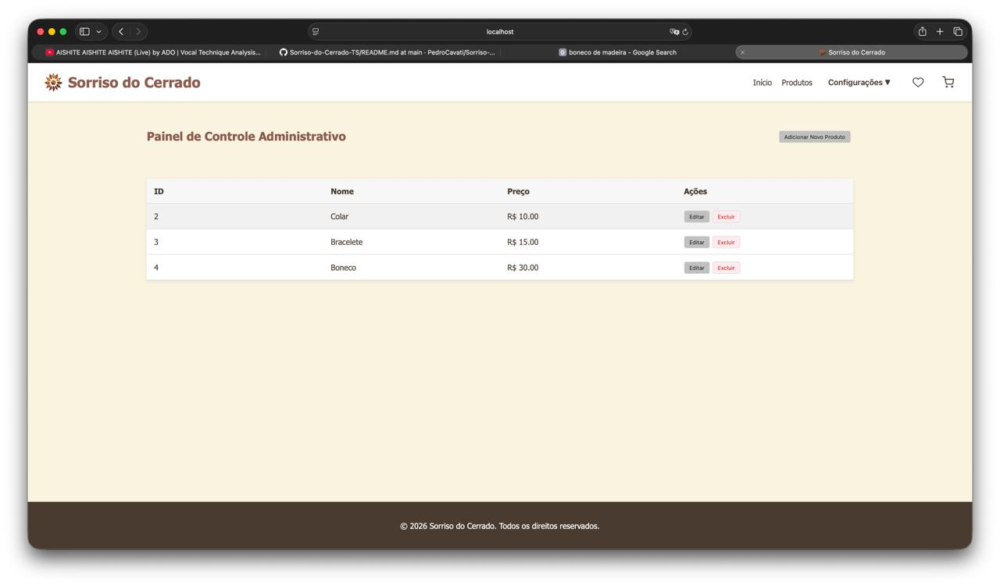
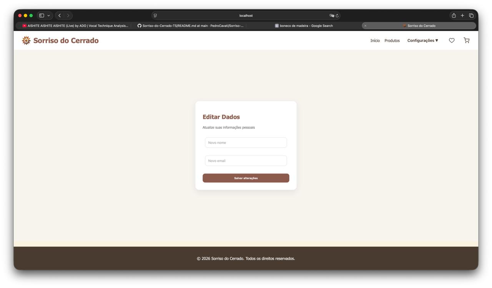
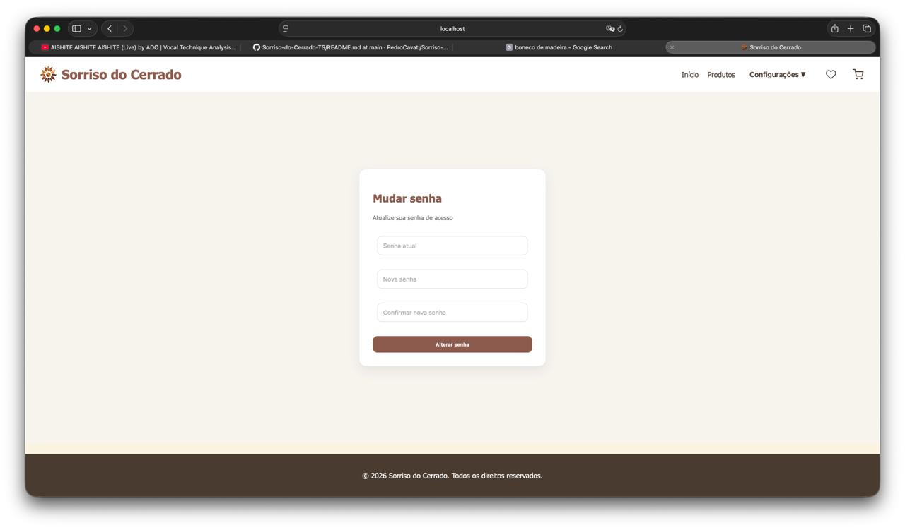

Telas Implementadas da Aplicação
Esta seção documenta as telas em funcionamento do Sorriso do Cerrado, combinando a demonstração em vídeo completa da Versão 2.0 (Marketplace) com o catálogo de telas implementadas contínuas e o mapeamento das novas rotas entregues em 2026/2.
Demonstração Completa das Telas em Funcionamento (YouTube)
Todas as telas da versão atual do marketplace — incluindo Explorar, Lojas Públicas, Checkout Pix (AbacatePay), Central de Mensagens, Cadastro de Artesão, Painel do Artesão (Resumo/Saldo/Saques/Configurações) e Painel Administrativo — estão demonstradas em operação no vídeo oficial:
1. Novas Telas e Rotas do Marketplace (2026/2)
Além das telas contínuas exibidas abaixo, a versão atual implementada no repositório (Front-End/src/pages) incorpora os seguintes módulos de interface:
| Tela / Rota | Perfil de Acesso | Principais Recursos Implementados |
|---|---|---|
Explorar (/explorar) |
Público | Busca unificada, filtros laterais (PainelFiltros), ordenação e descoberta de peças e artesãos. |
Lista de Artesãos (/artesaos) e Loja Pública (/artesaos/:id) |
Público | Diretório de artesãos ativos e vitrine individual com capa, história, catálogo próprio e botão de mensagem. |
Checkout Pix (PagamentoPix) |
Cliente autenticado | Exibição de QR Code e código Pix copia-e-cola (AbacatePay), contagem regressiva e confirmação automática via polling/webhook. |
Central de Mensagens (/mensagens) |
Cliente / Artesão | Lista de conversas por par cliente–artesão, envio de mensagens, histórico e contador de não lidas. |
Perfil Unificado (/perfil) |
Usuário autenticado | Visão geral da conta, histórico de pedidos recentes, edição de dados pessoais, foto e troca de senha. |
Cadastro de Artesão (/cadastro-artesao) |
Cliente | Fluxo "Quero vender" com dados pessoais, endereço, loja e dados financeiros cifrados (AES-256-GCM). |
Painel do Artesão (/admin) |
Artesão / Admin | Abas de Resumo (gráficos, indicadores e SaldoArtesao com solicitação de saques), Produtos, Pedidos, Configurações da Loja e Dados de Recebimento. |
Painel Administrativo (/painel-administrativo) |
Admin / Super Admin | Indicadores globais, gestão de banners (até 10), moderação de contas, gestão de administradores (super_admin) e exclusão lógica com auditoria. |
2. Telas Implementadas Contínuas (Capturas da Aplicação)
As interfaces abaixo permanecem ativas na aplicação, evoluídas para integrar o fluxo completo do marketplace:
2.1 Página Inicial (Home)
Vitrine operacional com carrossel dinâmico de banners promocionais, produtos em destaque e rodapé institucional.

2.2 Catálogo de Produtos
Catálogo em funcionamento com carregamento dinâmico a partir da API REST e banco de dados MySQL.

2.3 Tela de Login
Interface de autenticação com validação de campos, Better Auth e feedback visual imediato.

2.4 Tela de Cadastro de Usuário
Formulário de criação de nova conta com validação de força de senha e unicidade de e-mail.

2.5 Tela de Meus Favoritos
Visualização da lista de produtos favoritos persistida individualmente por usuário no banco de dados.

2.6 Carrinho de Compras
Fluxo de cálculo dinâmico de subtotais, controle de quantidades e avanço para o checkout Pix integrado.

2.7 Painel de Controle de Produtos
Painel de gestão do catálogo com visualização tabular de itens, estoques e atalhos de manutenção CRUD.

2.8 Edição de Dados Pessoais
Interface do perfil do usuário permitindo a atualização de nome, e-mail e informações cadastrais.

2.9 Alteração de Senha
Formulário seguro para atualização de credenciais de acesso com checagem de senha atual e confirmação.
